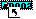

Rescheduling Operations Using Drag and Drop
VISUAL allows you to change the scheduled start or finish dates of an operation. You can do this manually by typing in either a start date and time or an end date and time, or if you are working with a what-if schedule, you can use the drag-and-drop feature to reschedule operations.
Note: You cannot use drag-and-drop functionality to reschedule operations in Production schedules.
To change the start/finish date of an operation using drag and drop:
In the Scheduling Window:
To change the start date, click in the left-hand half of the display bar, closest to the start of the operation, and keep the mouse button depressed.
To change the finish date, click in the right-hand half of the display bar, closest to the finish of the operation, and keep the mouse button depressed.
An arrow appears,

indicating that you are changing the start/finish date of the operation.With the left button still depressed, move your mouse to the new date. This is "dragging" the operation.
The status bar at the bottom of the Scheduling Window displays the new start/finish date and time that the operation will receive when you release the left button.
When you have moved the operation to the new date, release the left mouse button. This is "dropping" the operation.
If you have confirmation enabled in your preferences, the system prompts you to confirm the drop.
You can cancel a drop by clicking on the right mouse button prior to releasing the left mouse button.
Click Yes to confirm the drop, or No to cancel.
After you drop the operation, VISUAL may resize the operation and mark it as frozen, depending on the capacity where you drop it. The Scheduler does not reschedule that operation from its position unless you later choose to unfreeze it.
The Scheduler unfreezes a frozen operation and reschedules it if the frozen finish date is less than the schedule As Of date. The Scheduler adjusts the duration of frozen operations based on the remaining quantity.